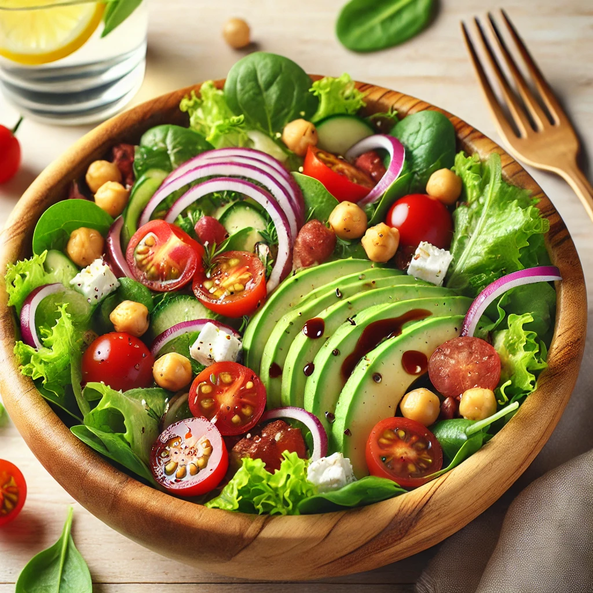

Slow Down Salad!

Description
Now don’t let “salad” fool you, this ain’t no plain ol’ rabbit food. We got crisp greens, juicy cherry tomatoes,
cool cucumbers, and creamy avocado, all mixed up with hearty chickpeas and a lil’ bit of feta for that good tangy bite.
Drizzle it with a smooth balsamic dressing, and whew, it’s fresh, it’s light, but it’ll still fill you up right.
Ingredients
- 4 cups mixed greens (lettuce, spinach, arugula)
- 1 cup cherry tomatoes, halved
- 1 cucumber, sliced
- ½ red onion, thinly sliced
- 1 avocado, diced
- ½ cup chickpeas (or grilled chicken for protein)
- ¼ cup feta cheese (or nuts for crunch)
- 2 tbsp olive oil
- 1 tbsp balsamic vinegar (or lemon juice)
- ½ tsp salt & black pepper
Get Into it!
- Prepare the veggies : Wash and chop all vegetables as needed.
- Assemble the salad : In a large bowl, combine greens, tomatoes, cucumber, onion, avocado, chickpeas, and feta.
- Make the dressing : In a small bowl, whisk olive oil, balsamic vinegar, salt, and pepper.
- Toss & serve : Drizzle dressing over the salad, toss gently, and enjoy!